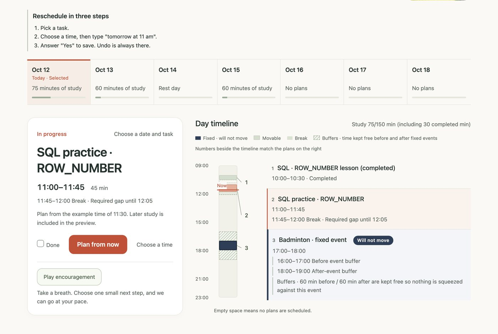

Shunri
A local scheduling app that previews how moving one task reshapes a study plan, built and reviewed by a team of eight AI agents.
Built from October to November 2026.

The problem
When one task moves, the rest of a study day has to move with it: breaks, buffers around fixed events and a daily limit. Shunri shows one proposal for the whole change and saves it only after you say yes, with undo always available.
How the agents work
Eight AI roles run on four cloud machines: coding, review, QA, product rules, UX, copy, scheduling and operations. Each change is written, reviewed and voted on, and only passes with at least seven of eight approvals.
An n8n flow checks the coordinator every five minutes, starts the machines, resumes interrupted work and shuts everything down when the queue is done.
Problems I fixed along the way
- Reverted a push that would have deleted the README and direction document, then barred the orchestrator from rewriting those files.
- Found a blank-page bug with a headless browser: the server missed one module. Added a test that the server serves every module the page loads.
- Traced slow rounds to each item needing about three fix rounds with only one seat writing code, and split work into a task board.
Results
One overnight round shipped 24 changes. Front-end code shrank by about 40% while all 980 tests kept passing. The app and the review tool are separate public repositories.